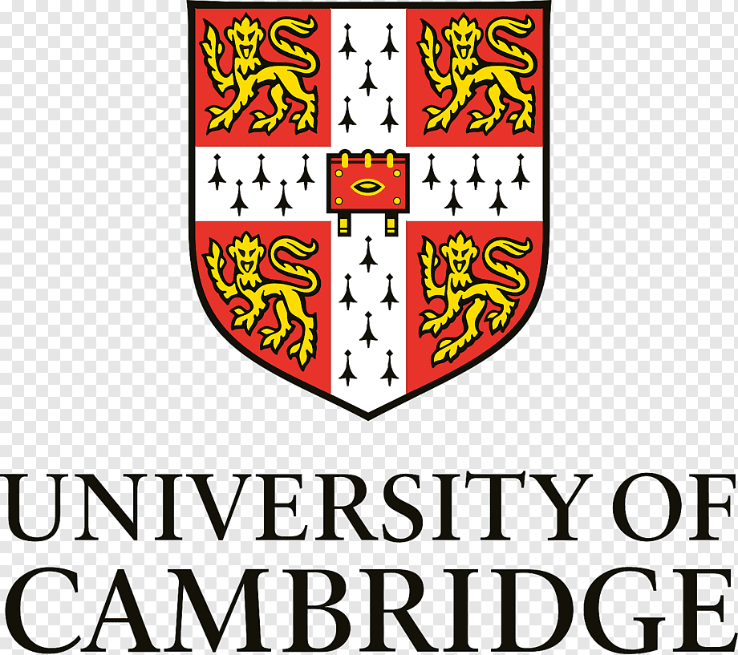
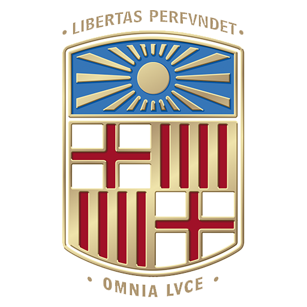

Pol Benítez Colominas
FI PhD Candidate at UPC
About
Research
Publications
Software
CV
Curriculum vitae
Short CV in PDF file
here
(last update: May 2025).
Experience
Oct 2025 - Present.
Visiting Researcher.
The University of Tokyo
Sep 2023 - Present.
Predoctoral Researcher.
Universitat Politècnica de Catalunya
Feb 2023 - Present.
Teaching Assistant.
Universitat Politècnica de Catalunya

Sep 2024 - Nov 2024.
Visiting Researcher.
University of Cambridge
Jan 2023 - Aug 2023.
Graduate Researcher.
Universitat Politècnica de Catalunya

Feb 2021 - May 2022.
Undergraduate Researcher.
Universitat de Barcelona
Education
2023-2026.
PhD in Computational and Applied Physics.
Universitat Politècnica de Catalunya
2022-2023.
Master's degree in Engineering Physics.
Universitat Politècnica de Catalunya
2016-2022.
Bachelor's degree in Physics, Mention in Fundamental Physics.
Universitat de Barcelona
Languages
English (Full professional proficiency)
Catalan (Native)
Spanish (Native)